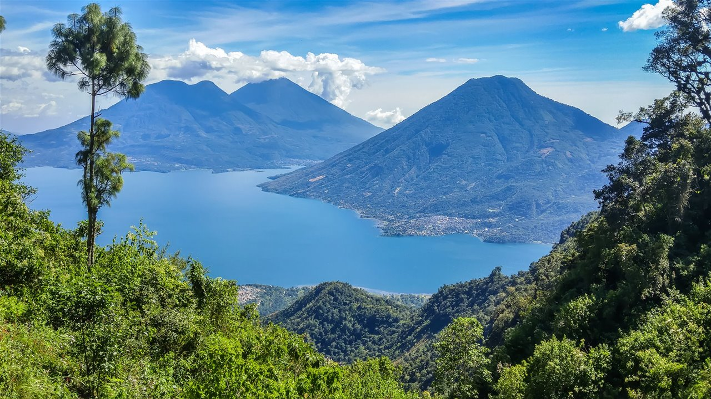

El Lago Atitlán es uno de los lagos más hermosos del mundo. Está rodeado por volcanes y pueblos mayas llenos de cultura, historia y color. Es un destino imperdible para los viajeros que buscan naturaleza y cultura.
Ubicación: Sololá
Atractivos: Volcanes, paseos en lancha, mercados artesanales, senderismo.